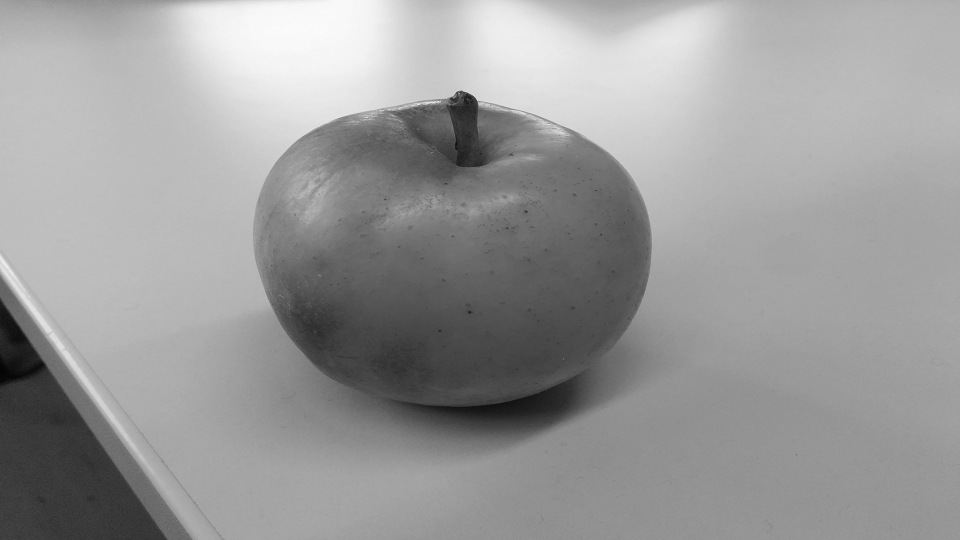
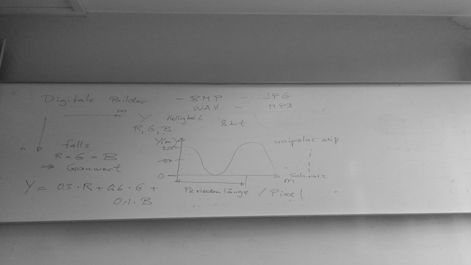
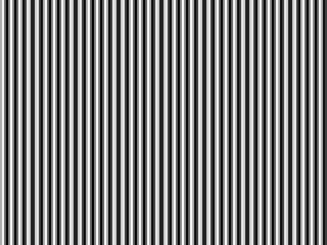
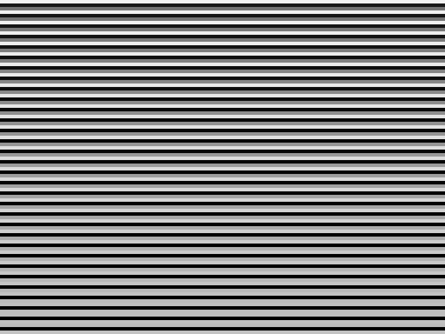
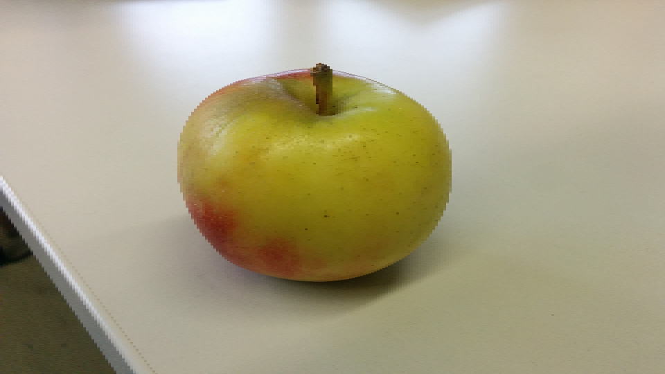
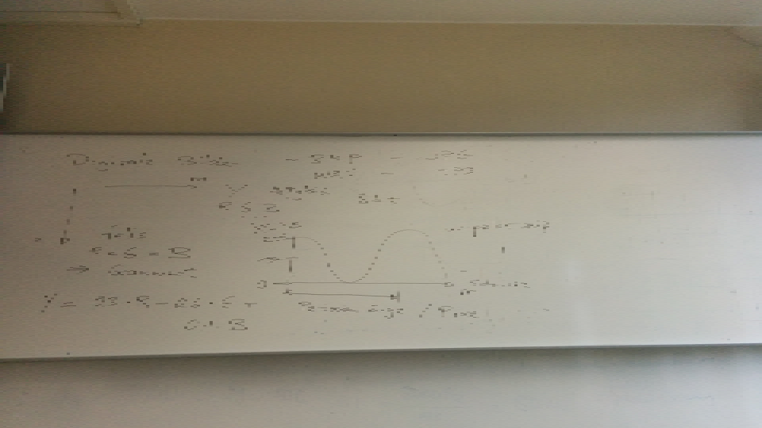

Erzeuge zwei Bilder im Format 16x9 mit deiner Kamera oder deinem Handy (960x540 Pixel, 24Bit), davon eines mit eher flächigen Inhalten (Gang/Decke/Wand/Schrank) und eines mit feineren Strukturen (Natur) und achte auf gute Belichtung. Typischerweise werden diese Bilder im komprimiert en JPG-Format abgespeichert sein. Damit wir sie für unsere Experimente benutzen können, müssen sie zunächst z.B. in Paint in Bitmaps konvertiert werden. Es kann auch sein, dass die Kamera ein anderes Format und eine andere Pixelzahl hat, so dass man die Dimensionen noch verändern muss. Speichere deine Bilder aus Paint also im BMP-Format mit 24Bit ab.
Benenne die Dateien "Flaechen_Na meArbeitsgruppe.bmp" und Detail s_NameArbeitsgruppe.bmp". Schick mir die beiden BMP-Dateien unt er Nennung deiner Arbeitsgruppe per Mail. In den folgenden Übungen wirst du diese Dateien oft als Ursprungsbilder verwenden. Sollt en sie verloren gehen, kannst du sie notfalls wieder von mir erhalten. Darauf werde ich dir zwei BMP-Dateien mit Testbildern zusenden, die du bei den folgenden Aufgabenpunkten benötigst, gratingHXX.bmp und grat ingVXX.bmp.
Nun lies die Bilder mit bmp_io ein und erkläre die Angaben im Header, die auf der Konsole ausgegeben werden! Wie erklärt sich die Dateigröße für die beiden Dateien?
Lösung:
Header gratingV8.bmp & gratingH8.bmp:
fileSize 921654 - Dateigröße in Bytes
bitsPerPixel 24 - Anzahl der Bits zur Pixeldarstellung (8 Bit pro Farbkanal bei RGB)
Breite 640 - Breite des Bildes in Pixeln
Höhe 480 - Höh des Bildes in Pixeln
Dateigröße: Erklären ?
2.1 Modifiziere bmp_io dahingehend, dass die RGB Werte der einzelnen Pixel in der BMP-Datei in eine (lesbare) ASCII-Datei geschrieben werden. Es reichen dabei jeweils eine Zeile und eine Spalte! Lies die von mir geschickten Testdateien ein und schätze aus den resultierenden Zahlenfolgen die Periodendauer in Pixeln in horizontaler und vertikaler Richtung. (Ortsfrequenz berechnen und jeweils eine Periode horizontal und eine vertikal für das Übungsprotokoll abspeichern).
Horizontale RGB-Werte von grating_H8.bmp:
R: 173, G: 173, B: 173
R: 34, G: 34, B: 34
R: 13, G: 13, B: 13
R: 136, G: 136, B: 136
R: 248, G: 248, B: 248
R: 206, G: 206, B: 206
R: 64, G: 64, B: 64
R: 1, G: 1, B: 1
R: 99, G: 99, B: 99
R: 232, G: 232, B: 232
R: 232, G: 232, B: 232
R: 99, G: 99, B: 99
R: 1, G: 1, B: 1
R: 63, G: 63, B: 63
R: 206, G: 206, B: 206
R: 248, G: 248, B: 248
R: 136, G: 136, B: 136
R: 13, G: 13, B: 13
R: 34, G: 34, B: 34
R: 173, G: 173, B: 173
R: 254, G: 254, B: 254
R: 173, G: 173, B: 173
R: 34, G: 34, B: 34
R: 13, G: 13, B: 13
R: 136, G: 136, B: 136
R: 248, G: 248, B: 248
R: 206, G: 206, B: 206
R: 64, G: 64, B: 64
R: 1, G: 1, B: 1
R: 99, G: 99, B: 99
Geschätze Periodendauer in Pixel:
Ortsfrequenz:
Vertikale RGB-Werte von grating_V8.bmp:
R: 243, G: 243, B: 243
R: 212, G: 212, B: 212
R: 166, G: 166, B: 166
R: 113, G: 113, B: 113
R: 63, G: 63, B: 63
R: 24, G: 24, B: 24
R: 3, G: 3, B: 3
R: 3, G: 3, B: 3
R: 25, G: 25, B: 25
R: 65, G: 65, B: 65
R: 116, G: 116, B: 116
R: 168, G: 168, B: 168
R: 214, G: 214, B: 214
R: 244, G: 244, B: 244
R: 254, G: 254, B: 254
R: 242, G: 242, B: 242
R: 210, G: 210, B: 210
R: 163, G: 163, B: 163
R: 110, G: 110, B: 110
R: 60, G: 60, B: 60
R: 22, G: 22, B: 22
R: 2, G: 2, B: 2
R: 4, G: 4, B: 4
R: 27, G: 27, B: 27
R: 67, G: 67, B: 67
R: 118, G: 118, B: 118
R: 171, G: 171, B: 171
R: 216, G: 216, B: 216
R: 245, G: 245, B: 245
R: 254, G: 254, B: 254
Geschätze Periodendauer in Pixel:
Ortsfrequenz:
Auch bei der Bildabtastung muss das sogenannte Abtasttheorem eingehalten werden. Wie lautet es und wie läßt sich der Grenzfall, für den es gerade noch gilt, illustrieren (Zeichnung !)?
Erzeuge aus deinen eigenen Farbbildern Graustufen-Bilder. Dazu muss der Helligkeitswert Y aus den RGB-Werten errechnet werden (wie und woher kommt die Formel?). Mit diesem Y-Wert wird dann die R, G und B-Information überschrieben. Speichere die Graustufenbilder
Lösung:
Auf Code-Ebene wird ein Pixel als grau wahrgenommen wenn alle drei Farbkanäle den selben Wert haben. Um nun einen RGB-Farbwert umzurechnen ermittelt man den Mittelwert aller drei Kanäle und setzt ihn als neuen Wert für die Kanäle.
Grau: R=G=B, Mittelwert: (R+G+B)/3
 |
 |
Erkläre, wie bei Bild- und Videoaufnahmen Aliasing entstehen kann. Ähnlich wie bei der 1. Übung am Audiosignal wollen wir auf das Bild ein Down-Sampling anwenden und sehen, wann dabei Aliasing auftritt. Beim Audiosignal haben wir jedes zweite Sample verworfen und damit die Abtastfrequenz halbiert. Beim Bild verringern wir die räumliche Auflösung, indem wir die Zahl der Bildzeilen bzw. Bildspalten verringern. Dabei wollen wir das Bild allerdings nicht verkleinern - was normalerweise die Folge wäre - sondern einfach die ungeradzahligen Spalten durch den Inhalt der geradzahligen Spalten ersetzen, d.h. Spalte 1 wird durch Spalte 0 ersetzt, Spalte 3 durch Spalte 2 etc. und analog für die Zeilen. Wenn das Ursprungsbild nun sehr feine Strukturen aufweist, wie in machen Testdateien, können Aliasing-Verzerrungen sichtbar werden. Achte darauf, dass stets Rot, Grün und Blau getrennt manipuliert werden müssen.
Lösung:
Wenn das Bild eine höhere Auflösung hat als die Kamera, kann Aliasing entstehen. In Bildern tritt ebenfalls der Moire-Effekt auf, wenn feine Musterungen bei nicht ausreichender Abtastefrequenz wellenförmige Helligkeitsverläufe zeigen. Bei Videos tritt der Wagon-Wheel-Effekt auf.
Modifiziere bmp_io dahingehend, dass zunächst in jeder Zeile des eingelesenen Bilds jedes ungeradzahlige Pixel durch das davor liegende geradzahlige Pixel ersetzt wird (horizontales Down-Sampling). Diese Veränderung hat natürlich nur bei einem der bei den Testbilder Sinn (warum?). Speichere das resultierende Bild ab. Da sich die Bildgröße bei dieser Operation nicht ändert, muss der Bild-Header auch nicht verändert werden. Falls du im Ergebnis keine Veränderung sehen kannst, ersetze mehr Spalten, also Spalte 1 und 2 durch Spalte 0, dann Spalte 1, 2 und 3 durch Spalte 0 usw. Wende diese Manipulation auf die Testbilder an, bis du eine Veränderung in Form eines Moiré-Musters siehst.
Notiere, bei welcher Verringerung du die Veränderungen beobachtest und beschreibe die Veränderungen! Erkläre das Ergebnis an Hand der von dir bestimmten Periodendauer in Pixeln. Nun wende die Zeilenverringerung vertikal an, d.h. ersetze die Pixel jeder ungeradzahligen Zeile durch die der Zeile davor (vertikales Down-Sampling). Auch hier hat die Manipulation nur bei einer der Testdateien Sinn! Abschließend wendest du noch das horizontale Downsampling auf deine eigenen Bilder an, bis du eine sichtbare Verschlechterung beobachtest. Notiere auch hier, wann dies bei deinen beiden Bildern der Fall ist.
Lösung:
 |
 |
Die Veringerung bereits um 1 Spalte bei der horizontalen Manipulation liefert eine Veränderung. Bei Veringerung um 3 Spalten tritt der Moire-Effekt auf.
Die Veringerung bereits um 1 Reihe bei der vertikalen Manipulation liefert eine Veränderung. Bei Veringerung um 4 Reihen tritt der Moire-Effekt auf.
 |
 |
Bei Downsampling von Details-Bild treten die Veränderungen ab 3 Spalten. Sie werden besonders bei Kanten und Übergängen sichtbar.
Bei Downsampling von Flaeche-Bild treten die Veränderungen ebenfalls ab 3 Spalten.
Wir wollen nun bmp_io so modifizieren, dass wir die Bitzahl reduzieren können. Dazu können wir z.B. alle RGB-Werte durch eine Potenz von 2 teilen (Integer-Division ohne Rest). Damit das resultierende Bild nicht dunkler wird als das Original, kompensieren wir die Operation durch Multiplikation mit derselben Zweierpotenz. Zu beachten: Der Datentyp hat nach wie vor eine Bittiefe von 24Bit (8bit pro Farbe!) (Denselben Effekt erreicht man auch durch einfaches logisches 'Verunden' mit einem entsprechenden HEX-Wert, indem man mit dem LSB beginnend Bits 'ausblendet'.)
Mit dem entstandenen Programm verändern wir die in Aufgabe 1 erzeugten BMP-Dateien. Ab welcher Bitzahl tritt beim Detail-Bild und beim Flächen-Bild eine sichtbare Verschlechterung der Qualität ein? Wie kann man diese Verschlechterung am besten beschreiben? (Alle Ergebnisbilder ins Übungsprotokoll)
Modifiziere dein Programm noch einmal so, dass auch das Differenzbild zwischen Original und bitreduziertem Bild, das heißt das Fehlerbild ausgegeben, werden kann. Beachte dabei, dass bei der Differenzbildung negative und positive Werte auftreten können. Diese müssen wieder in den Wertebereich 0...255 transformiert werden, d.h. auf den Mittelwert 127 gebracht werden (wie?). (Bilder all dieser Fälle ins Übungsprotokoll)